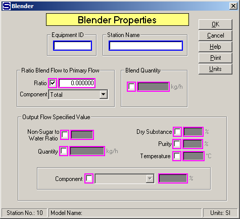

Equipment ID An equipment ID of up to 11 characters can be used to identify the station with an actual station in the process. Any combination of numbers and letters that are used in the factory/refinery to identify equipment can be entered. For example, Equipment ID = 123.456A. It is not necessary to make an entry in the Equipment ID field if the station in the model does not have a corresponding station in the factory/refinery.
Station Name A name of up to 20 characters must be entered for the station. For example, Station Name = Magma Mixer.
Ratio Blend Flow to Primary Flow Select the Ratio Flow to Component entry fields by clicking in the small box between "Ratio" and the ratio entry field. This will cause the other fields to gray out and not be accessible. After the box is checked, make an entry in the Ratio field and select a Component from the component drop-down list. Magenta colored borders on the entry fields are used to indicate that only one of the entries can be selected; that is, when one is selected the others are not accessible.
Ratio The quantity of blend flow is controlled by a ratio value of the quantity of flow in a component of the primary flow, or to the total flow. For example, Ratio = .3 to use a ratio of .3 to the quantity of the component selected in the Component entry box.
Component The component drop-down box allows for a selection to be made from the components in the primary flow stream for use with the ratio value to control the blend flow into the blender. The blend flow will be controlled to flow into the blender in a ratio to the quantity of component flow in the primary input flow. For example, Component = CaO means the quantity of blend flow will be controlled to the ratio entry value times the quantity of input flow times the component fraction of CaO. Component = Total means the quantity of blend flow will be controlled to the ratio entry value times the total quantity of input flow.
Blend Quantity Select the Blend Quantity entry field by clicking in the box to the left of the entry field. Enter the quantity of blend flow into the blender in the weight units shown to the right of the entry field. The quantity of output flow from the blender will be the sum of the primary input flow plus the specified blend flow. For example, Blend Quantity = 12450.0 means that 12,450 weight units (kg, or lb) per hour will be added to the primary flow.
Output Flow Specified Value The amount of blend flow can be controlled by the non-sugar to water ratio, quantity, dry substance, purity, temperature, or percent of a component in the output flow. Check the small box next to the entry field and make an entry in the field to select an option.
Non-Sugar to Water Ratio Enter a Non-Sugar to Water Ratio for the output flow that is to be controlled by the blend flow. Non-sugars are the dissolved non-sucrose components. For example, Non-Sugar/Water Ratio = 2.37.
Quantity Enter a Quantity for the output flow and the blend flow will be used to control the output flow to the value entered. For example, Quantity = 150,000.00 means that the quantity of blend flow into the blender station will be controlled to give an output flow of 150,000 kg/h (when SI units are selected).
Dry Substance Enter a Dry Substance of the output flow from the blender that is to be controlled by the blend flow. The Dry Substance is the dissolved solids and crystalline sucrose (if any) divided by the total liquid and crystalline sucrose quantity (that is, dissolved solids, crystalline sucrose and water). For example, Dry Substance = 62.50%.
Purity Enter a Purity of the output flow from the blender that is to be controlled by the blend flow. The Purity is the dissolved and crystalline (if any) sucrose divided by the dissolved dry substance and crystalline sucrose (if any). For example, Purity = 87.60%.
Temperature Enter a Temperature of the output flow from the blender that is to be controlled by the blend flow into the blender. For example, Temperature = 74.5.
Component The quantity of blend flow will be adjusted to satisfy the % field entry using the Component for the output flow. Select the Component from the drop-down box by clicking the down arrow. For example, Component is CaO and entry is 3.0000 in the % field will give 3.00% CaO in the output flow. Or, when Component is Water and entry is 85.0000 in the % field, the blend flow will be adjusted to control the output flow to have 85.00% water.